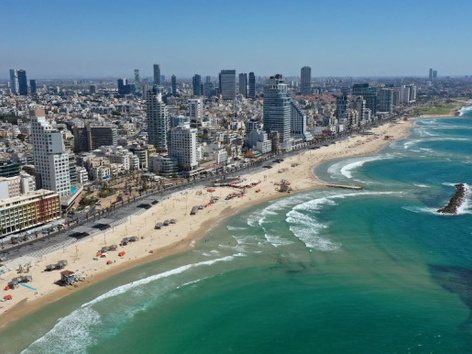
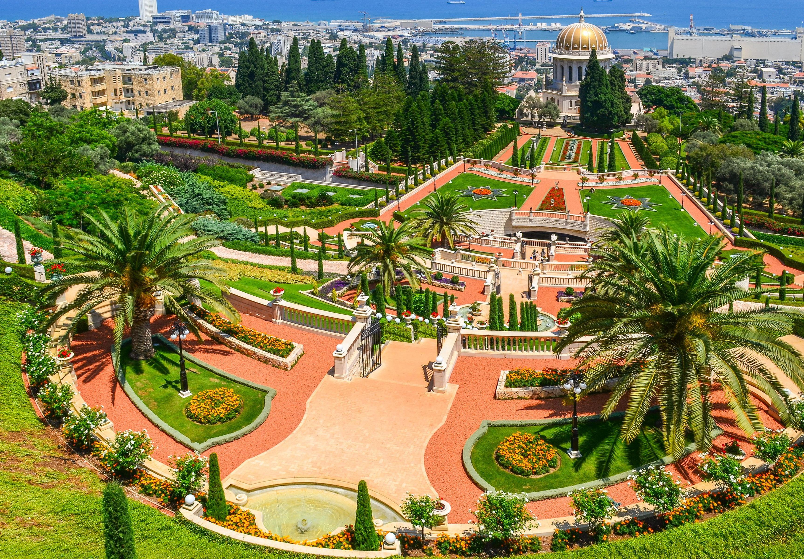
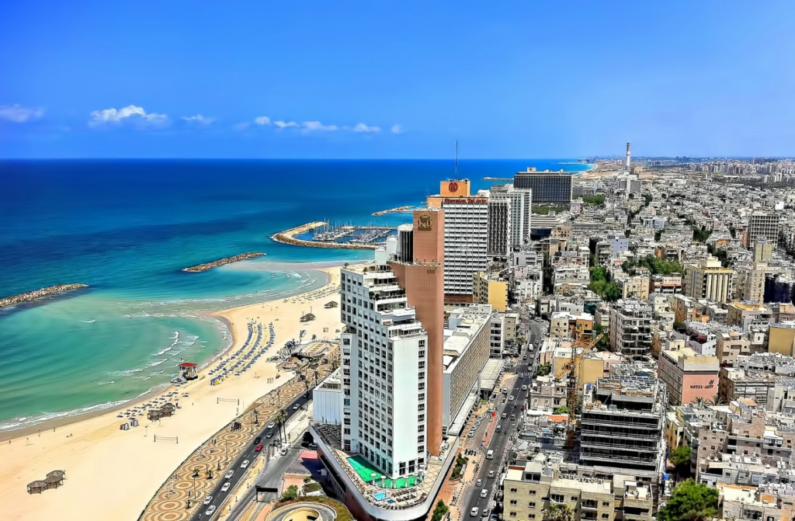
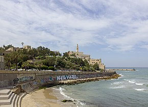
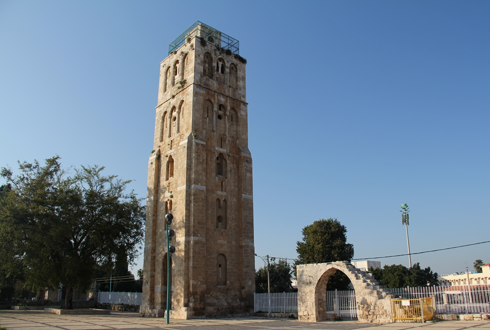
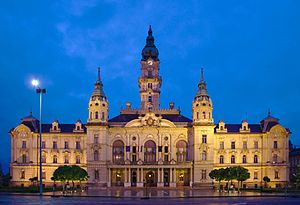
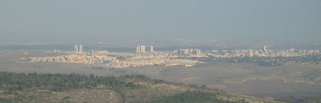
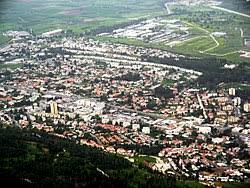

Ізра́їль (івр. יִשְׂרָאֵל, араб. إِسْرَائِيل), офіційна назва — Держа́ва Ізра́їль (івр. מְדִינַת
יִשְׂרָאֵל Медіна́т Ісраéль, араб. دَوْلَة إِسْرَائِيل Да́улят Ісра'іль) — держава в західній Азії, що
розташована на південно-східному березі Середземного моря та північному березі Червоного моря. Межує з
Ліваном на півночі, Сирією на північному сході, Йорданією на сході та Палестиною й Сектором Гази на сході
та заході, відповідно[3], а також Єгиптом на південному заході. Країна має географічно різноманітні риси
в межах своєї відносно невеликої площі[4][5]. Економічним та технологічним центром країни є Тель-Авів[6],
тоді як її місцем уряду та проголошеною столицею є Єрусалим, щоправда, визнання суверенітету держави над
Єрусалимом є обмеженим[7][8][9][10]. Державна мова — іврит, водночас арабська мова має особливий
статус[11].

Хайфа (івр. חֵיפָה, араб. حَيْفَا; теж Хейфа́[джерело?]) — третє за величиною місто Ізраїлю зі змішаним
єврейсько-арабським населенням. Столиця Хайфського округу, і вважається столицею півночі та її найбільшим
міським центром.

Я́ффа — район Тель-Авіва в Ізраїлі, Тель-Авівський округ. Давній порт, колишнє історичне місто Близького
Сходу. Колишня столиця Яффо-Аскалонського графства (1099—1268) у складі Єрусалимського королівства.

Єгу́д (івр. יְהוּד) є містом в Центральному окрузі Ізраїлю, яке є частиною спільного муніципалітету
Єгуд-Моноссон. У 2013 році населення Єгуду склало близько 28 200 (виключаючи Неві-Моноссон).

Рамла — ледь не єдине місто Ерец-Ісраель, засноване арабами[4]. Назва міста утворена від арабського слова
«пісок». Місто заклав 716 року халіф Сулайман, який пропонував зробити його столицею Палестини замість
Лідди. За його правління було відбудовано фортечні стіни, ринок і велику мечеть. Від будівель того часу
зберігся лише 27-метровий мінарет («Біла вежа»), добудований у XIII столітті Бейбарсом.

Ізра́їль (івр. יִשְׂרָאֵל, араб. إِسْرَائِيل), офіційна назва — Держа́ва Ізра́їль (івр. מְדִינַת
יִשְׂרָאֵל Медіна́т Ісраéль, араб. دَوْلَة إِسْرَائِيل Да́улят Ісра'іль) — держава в західній Азії, що
розташована на південно-східному березі Середземного моря та північному березі Червоного моря. Межує з
Ліваном на півночі, Сирією на північному сході, Йорданією на сході та Палестиною й Сектором Гази на сході
та заході, відповідно[3], а також Єгиптом на південному заході. Країна має географічно різноманітні риси
в межах своєї відносно невеликої площі[4][5]. Економічним та технологічним центром країни є Тель-Авів[6],
тоді як її місцем уряду та проголошеною столицею є Єрусалим, щоправда, визнання суверенітету держави над
Єрусалимом є обмеженим[7][8][9][10]. Державна мова — іврит, водночас арабська мова має особливий
статус[11].

Модиин-Маккабим-Реут (Модиин-Макабим-Реут ивр. מודיעין-מכבים-רעות) — город в Израиле, находится в
Центральном округе между Тель-Авивом и Иерусалимом. Модиин был основан в 1993 году предположительно на
месте древнего поселения с тем же названием, в котором началось описанное в Книге Маккавеев восстание
Маккавеев в 167 году до н. э.

Кір'ят-Шмона (івр. קריית שמונה) — місто в Північному окрузі Ізраїлю, розташований неподалік від кордону
з Ліваном.
Місто назване на честь вісьмох («вісім» на івриті — «шмона», שמונה) полеглих захисників легендарного
поселення Тель-Хай, що знаходиться поруч з Кирьят-Шмона.